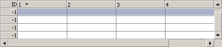
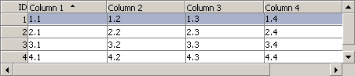

This grid widget is based on objects and all html code is generated from a js structure. To create a grid you won't have to write a single line of html however you will have to learn how to create the grid, row and cell objects.
The grid can either be created during the initial load phase of the page, using document.write, or it can be
generated and inserted into a document using innerHTML or similar.
The overall procedure is the same no matter when the grid is created. First of all an instance of the
WebFXGrid object is created, the constructor can either take a two dimensional array as
it's first, and only argument, or the desired number of rows as the first and the desired number of
cells as the second argument. Once the grid object has been created it will automatically create
row and cell objects according to the supplied arguments, thus there's no need to create those manually.
Now that the object(s) has been created it's time to set the column headers, row server ids and link
data, while all those are optional they have to be set at this stage if they are desired.
After all such settings has been made the grid object can be rendered. If the grid is created during
the load phase use something like document.write(oGrid); where oGrid is the name of the
grid object. If that's not the case something like document.getElementById('container').innerHTML
= oGrid; could be used.
The HTML code has now been generated and written to the page, however the elements it
consists of are improperly positioned and sized, to fix this execute the method calcSize
on the grid object. Below are two examples that demonstrates the different ways of creating the grid object.
var oGrid = new WebFXGrid(5,5); oGrid.setHeaders(['1','2','3','4','5']); document.write(oGrid); oGrid.calcSize();

var aData = [ ['1.1','1.2','1.3','1.4','1.5'], ['2.1','2.2','2.3','2.4','2.5'], ['3.1','3.2','3.3','3.4','3.5'], ['4.1','4.2','4.3','4.4','4.5'], ['5.1','5.2','5.3','5.4','5.5'] ]; var aHeaders = [ 'Column 1', 'Column 2', 'Column 3', 'Column 4', 'Column 5' ]; var aRowIds = [1,2,3,4,5]; var oGrid = new WebFXGrid(aData); oGrid.setHeaders(aHeaders); oGrid.setRowsServerIds(aRowIds); document.write(oGrid); oGrid.calcSize();

Creating a grid and entering data in it might be fun, but it's not that
useful if you can't retrieve the data from it, and since this component aims
at being useful there are several methods for doing just that. The first one,
getGridData, is made for clientside usage and returns a complete
data structure containing all the grid data. It's returned as a two dimensional
array and can be used directly to create a new grid with the same set of data.
new WebFXGrid(oGrid.getGridData());
While the first method was made for clientside use the second one was made for
server interaction. Unlike the first one it does not return the complete data
structure, but only the changes made since the grid was created, or since the
method was last invoked. The name of the method is dump and it
returns the base uri, set by the setUri method, followed by the
data. Please see the backend introduction for more information about
the format of this string.
History & Introduction
Usage
API
Backend - Introduction
Backend - Perl (cgi/mod_perl)
Backend - C++ (cgi/isapi)
Backend - Java (servlet)
Demo
Download